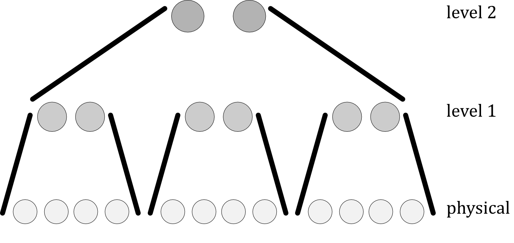

One way in which error-correction protocols are used in quantum computers is making them fault tolerant: by encoding each aspect of the computation, it should be possible to make sure that a single error doesn’t spread and create more than one error per block of qubits going forward. Encoding the computation means using encoded data qubits, but it also requires finding ways to implement gates and measuring on these qubits, among other things. The overall goal is to reduce the probability of an error occurring to a certain threshold, so that the conditions of the Accuracy Threshold Theorem hold: suppose Q is the circuit being used to compute a function. Then for any $\epsilon > 0$, it is possible to find another circuit Q’ which computes a function $\epsilon$-close to C provided its error rate is below a certain threshold. For the Steane code, this threshold is about $10^{-6}$.
The error rate includes data storage errors, as well as errors from gates being implemented. Fault-tolerance is defined as the property that a single error in a gate or storage block causes at most one error per coded block of qubits. There is still a possibility of more than a single error occurring, so if the system isn’t set up to deal with this there could still be a cascade of errors, but it’s typically assumed that it’s far more likely that only a single one occurs.
Many protocols don’t just use one code – they layer multiple encodings using concatenation, which has the effect of reducing the error probability polynomially, although this also increases the number of physical qubits needed to perform the computation. Take an $[n_1,k_1]$ code $C_1$ and an $[n_2, k_2]$ code $C_2$. To concatenate them:
We want this to be a stabiliser code, so generators are needed. A copy of the generating set for $C_1$ is associated with each block in the first step. Then copies of the generators for $C_2$ are associated with each block $b(i)$, which we add to the generating set for our concatenated code, and finally the image of each copy of $C_1$’s generators when $C_2$ is applied to them is also added to the generating set. After encoding the data qubits, we need to figure out how to encode the gates and measurement protocols. The benefit of having a universal set of gates is that we can just find a way to implement these, rather than every possible logic gate that might be needed.
For most of the gates, it’s easiest to find an encoding by considering their effects on the X and Z operations. For example, the Hadamard gate interchanges these, so it’s just necessary to find a combination of gates that has this effect on $X$ and $Z$ when encoded. Often, this can be done by applying an unencoded Hadamard gate to each qubit in the code block – this bit-wise application is transversal, meaning an operation which either only affects a single qubit at a time, or only causes the ith qubits on different blocks to interact with each other. If a gate is transversal, then it is fault tolerant, as an error can’t get to more than one qubit in each code block. The CNOT gate is typically implemented transversally as well. The Phase gate leaves the $Z$ operator untouched, but turns the $X$ into $Y = iXZ$, and $Y$ into $X$. The last gate to consider is $\frac{\pi}{8}$, which is often created in a different way to the others. This shifts the phase of$a|0\rangle +b|1\rangle$ to $a|0\rangle+be^{\frac{i\pi}{4}}|1\rangle$. Firstly, ancilla qubits (the same number as in the code block) are prepared so that they are each in the state $\frac{1}{\sqrt{2}}(|0\rangle + e^{\frac{i\pi}{4}}|1\rangle$. Then CNOT gates are used from the ancillas to the code qubits, which creates a superposition where the amplitudes are also superpositions: $$(a|0\rangle+be^{\frac{i\pi}{4}}|1\rangle))|0\ket+(a|1\rangle+be^{\frac{i\pi}{4}}|0\rangle)|1\rangle$$ Which means that measurements can be carried out: the act of measuring puts the qubits in one of the amplitude states, and we can tell which one it is depending on the outcome of the measurement. Finally, if the result was one, $SX$ is applied to the qubit to map it into the correct state.
Now the gates are encoded, a way of measuring is needed (actually, this is also needed to implement the $\frac{pi}{8}$ gate). It is common for some operations in a computation to be based on the value of some of the qubits, so it is crucial for the way they’re measured to be accurate. Like the $\frac{pi}{8}$ gate, measurements use ancilla qubits. The ancilla qubits are prepared in the state $|00\ldots0\rangle +|11\ldots1\rangle$. The data qubits have a controlled measurement operator applied – this means that the $i^{th}$ qubit is measured only if the ancilla is in the state $|11\ldots1\rangle$. The ancilla qubits are finally decoded using CNOT and H, returning 0 or 1 depending on what the eigenvalue of the data qubit was. These final gates could still fail, so in order to reduce the fault probability, the measurement procedure is repeated 3 times with a new set of ancillas each time.
The surface codes utilise the boundaries of the array in order to implement X and Z operations. Each data qubit on a boundary is only acted on by 3 measurement qubits, which allows the state to be changed without affecting the measurement results. In particular, 2 X operations commute with a Z stabiliser. So a chain of X operations between 2 boundaries won't be measured by the Z qubits along the way but will change the state. The same can be done with a chain of Z operations between boundaries. In the diagram above, the X chain would be from left to right and the Z chain top to bottom.
Further possibilities for operations are obtained by disabling some of the measurement qubits to form a "hole" - called a defect - which gives the data qubits around the defect more degrees of freedom. A logical operator can be made by applying a chain of operators around the hole, and this can also shorten the length of the chain needed for other operators. If a Z qubit is disabled in the diagram array, then the logical X operator can be defined from the left boundary to the edge of the hole, which means fewer components to potentially fail.
One advantage of surface codes is the higher error threshold - as high as $1\%$ compared to $O(1\times 10^{-5}) \%$ for some CSS codes. However, a typical surface code will need a lot more qubits to create one logical qubit, as many as 1000 or 10,000 for reasonable tolerance.
Combining all these methods together to create quantum circuits lets computing be done in a more robust way, which is becoming even more important as the size of quantum computers grows – more qubits and gates means more places a fault could occur.